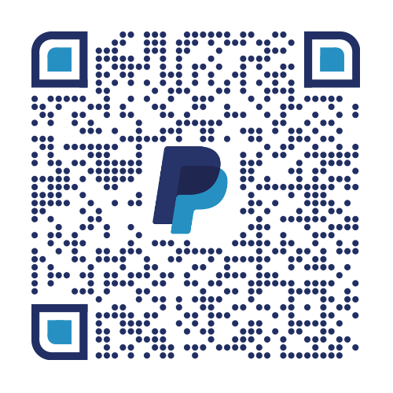

Présentation
Bienvenue dans l'antre de MetaDigiLab, le « tel quel » convertisseur ISO→MP4 où même les rétro-geeks émergent triomphants ! Grâce à nos pipelines inspirés de MakeMKV, FFmpeg et libdvdcss, transformez vos DVD et Blu-Ray en MP4 sans une once de compromis.
Fonctionnalités
- Rippez vos ISO et disques physiques en perfection MP4
- Extraction et organisation automatique de chapitres, pistes audio et sous-titres
- Renommage élégant avec numéros de titre (parce que chaque film mérite son rang royal)
- Fusion finale en un seul fichier pour binge-watching ininterrompu
- Génération de fichiers texte listant timecodes et titres de chapitres
Télécharger
📥 Télécharger MetaDigiLab (archive 7z)Archive nommée Metadigilab.7z (dans le dossier Metadigilab, testée sous Windows 11 et PC nostalgiques).
Adresse Bitcoin
3QhqyPVaDFvMQjiWcFWoeRNotQ5Rvn6uWY
Scannez ce QR code pour un don :

Scannez ce QR code PayPal :
Le logiciel est gratuit : il fait quelques “freezes” pour recharger ses piles, mais un petit sou au chapeau serait providentiel pour financer la V2 avec bras bioniques… et ainsi cliquer à votre place (parce que là, on n’en peut plus !)
À propos
Version : 1.18.1 | Auteur : Lufexe | Date : 3 mai 2025
MetaDigiLab vous embarque dans une odyssée audiovisuelle où chaque ISO maudit renaît en MP4 flamboyant. Trois actes épiques, de l’extraction ISO → MKV au grand final MP4 fusionné « Grand Méliès style ».
⚠️ Ne sacrifiez surtout pas de chèvre : nos pipelines sont sacrés, mais pas suffisamment pour les offrandes animales.
Contact & support : metadigilab@gmail.com